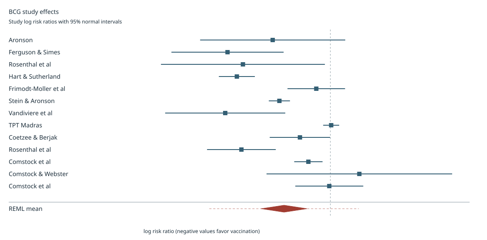

Getting started
This guide fits a random-effects model to the BCG tuberculosis dataset. The example runs entirely in Julia; R is needed only to regenerate the pinned reference comparison.
1. Install Julia and prepare the checkout
Install a current Julia release, clone this repository, then instantiate its declared dependencies from the repository root:
git clone https://github.com/itchyshin/Metafor.jl.git
cd Metafor.jl
julia --project=. -e 'using Pkg; Pkg.instantiate()'The package is experimental and is not registered. The commands above use the checked-out source directly.
2. Fit the BCG model
Run the model case from the repository root:
julia --project=. examples/bcg.jl --case=modelsThe script reports a fixed-effect fit followed by a REML random-effects fit. For the random-effects model, the captured output is:
RESULT|random|beta=-0.7145323483651012|se=0.1797815317803615|tau2=0.3132433259808953|QE=152.2330080823734|I2=92.22138607496557|H2=12.85576080311216|ci_lb=-1.066897675740053|ci_ub=-0.3621670209901494The coefficient is a log risk ratio: a negative value means lower observed risk in the vaccinated group. The interval describes uncertainty in the pooled mean effect; the model also estimates between-study variance (tau2). These values are fixture-specific and are not a claim of general agreement across all data or options.
3. Inspect the forest data and plot
The forest case uses the same BCG observations and writes examples/bcg-forest.svg:
julia --project=. examples/bcg.jl --case=forestIt prints study-level estimates and intervals, then a pooled summary including a prediction interval for a new study. The SVG is generated by this project; it is not copied from the upstream R package. The build copies the checked SVG from the example output into the documentation assets.

For the plot inputs and their provenance, see forest-plot data.
Where to go next
- All tutorials for focused, runnable analyses.
- Method reference for exported functions and limits.
- Cross-language comparisons for the linked fixture reports.
- Differences from R
metaforfor implementation distinctions.